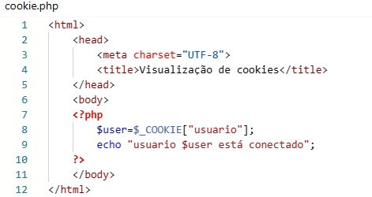
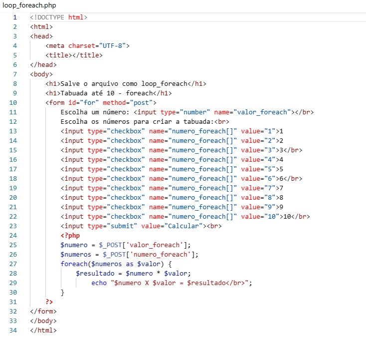

O que é
PHP (Hypertext Preprocessor) é uma linguagem de programação de código aberto e amplamente utilizada, especialmente adequada para o desenvolvimento web. Originalmente criada por Rasmus Lerdorf em 1994, o PHP evoluiu ao longo dos anos e se tornou uma linguagem de programação de servidor bastante popular.
Aqui estão algumas características e aspectos fundamentais do PHP:
Propósito Principal: PHP é principalmente usado para desenvolvimento web, permitindo que os desenvolvedores incorporem código diretamente no HTML para criar páginas dinâmicas.
Sintaxe: A sintaxe do PHP é semelhante à de outras linguagens de programação, com uma mistura de HTML e scripts PHP embutidos.
Embeddable: O PHP pode ser facilmente incorporado em documentos HTML, permitindo que os desenvolvedores misturem código PHP com marcação HTML.
Servidor Web: O PHP é executado no lado do servidor, o que significa que o código PHP é processado no servidor web antes de ser enviado para o navegador do usuário.
Ampla Base de Usuários: Devido à sua longa história e popularidade, o PHP tem uma grande comunidade de desenvolvedores e uma ampla variedade de recursos disponíveis.
Suporte a Bancos de Dados: O PHP oferece suporte integrado para vários bancos de dados, tornando-o uma escolha comum para aplicativos que interagem com bancos de dados.
Open Source: O PHP é uma linguagem de código aberto, o que significa que o seu código-fonte é acessível e pode ser modificado por qualquer pessoa.
Modularidade: O PHP permite a criação de módulos e extensões, o que facilita a expansão das funcionalidades da linguagem.
Plataforma Independente: O PHP é executado em vários sistemas operacionais, como Windows, Linux, macOS, etc.
Facilidade de Aprendizado: PHP é considerado fácil de aprender para iniciantes, tornando-se uma escolha comum para muitos desenvolvedores iniciantes em desenvolvimento web.
Aqui esta m exemplo de uma programação em php funcionando:

Este é o início de um documento HTML básico. A seção >head> contém a definição do conjunto de caracteres (UTF-8) e o título da página. A seção >body> é onde o conteúdo da página é colocado.;
Este trecho de código PHP está embutido dentro da seção
da página HTML. $_COOKIE["usuario"]: Esta linha está recuperando o valor do cookie chamado "usuario" e atribuindo-o à variável $user. echo "usuario $user está conectado";: Aqui, está sendo impressa uma mensagem na página HTML, indicando qual usuário está conectado. O valor de $user é incluído na mensagem.em seguida a programação se fecha com e voltando ao html
Resumindo, este código HTML incorpora um trecho de código PHP que verifica se existe um cookie chamado "usuario", recupera seu valor e exibe uma mensagem na página indicando que o usuário está conectado.
Aqui temos um outro exemplo em que o código PHP incorpora calculo da tabuada usando um loop foreach e exibe os resultados na página.
: Trecho de código PHP incorporado para processar o formulário. $numero = $_POST['valor_foreach'];: Obtém o valor digitado pelo usuário no campo de entrada. $numeros = $_POST['numero_foreach'];: Obtém a lista de números escolhidos pelo usuário usando as checkboxes. foreach($numeros as $valor) { ... }: Um loop foreach que itera sobre a lista de números escolhidos. $resultado = $numero * $valor;: Calcula o resultado da multiplicação. echo "$numero X $valor = $resultado";: Exibe a equação e o resultado na página.
O "h1" é um elemento que exibe um texto com um tamanho maior.
Aqui temos mais uma parte em html
: Um campo de entrada para o usuário escolher um número.
Escolha os números para criar a tabuada:
: Uma linha indicando que os usuários devem escolher os números para a tabuada.
Checkboxes para escolher os números de 1 a 10: Cada checkbox representa um número para multiplicar pelo número escolhido anteriormente.
: Um botão de envio para calcular a tabuada.